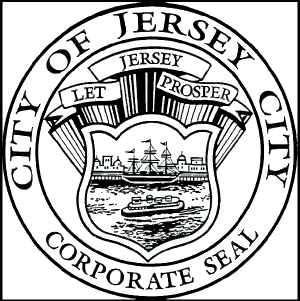
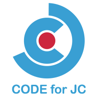

Join Us!
Code for JC has put together a special day just for you. Have fun exploring the many data resources available via Jersey City's web portal and how you can use them to get answers, uncover local trends, and resolve a variety of issues that impact you and your neighbors
Agenda
The hackathon begins in the morning with complimentary refreshments. Morning presentations will prepare you for the afternoon workshop. The event closes with participant presentations.
Learn
From operations to budgeting, redevelopment to demographics, the Jersey City website offers a wealth of statistical data that you can freely access and use to better understand what's happening in your community.
CodeAcross 2015 Recap
See the winners of last year's PATH Data Jam, using Port Authority data!
Jersey City celebrates CodeAcross 2016
CodeAcross is a national weekend of simultaneous events in the Code for America network of more than 40,000 volunteers and more than 130+ brigades throughout the US.
As part of this event, Code for JC will host its annual CodeAcross hackathon on Saturday, March 19 at the Hudson County Boys & Girls Club. The goal of our CodeAcross event is to activate the local civic technology network and collaborate with neighbors to develop innovative solutions that help identify and solve real city challenges.
Open to all students and professionals, CodeAcross gives everyone the opportunity to grow and learn – no matter their background or skill. Urbanists, civic hackers, government staff, developers, designers, students, community organizers and civic advocates all participate. CodeAcross isn’t just a chance to build websites, visualizations, and other hacks; it’s also an opportunity to build relationships within the community. Jersey City’s CodeAcross collaborative environment allows teams of all kinds to push the boundaries of innovation and take creative risks for a chance to make a significant impact.
In the final hour, each team gets to shine, giving a concise presentation showing how you solved your particular civic challenge.
Whether you're a tech newbie, a seasoned developer, an urbanist, a civic hacker, a government staffer, a designer, or a community organizer, if you care about Jersey City, you're virtually guaranteed to have a great time, make lots of new friends and learn a whole lot of neat stuff.
Agenda
This hackathon will begin with an overview of the event and event’s theme, followed by inviting the participants to suggest ideas and congregate into teams based on their individual interests and skills. The main work begins and lasts a number of hours. This all culminates with each team demonstrating their project or prototype, as well as presenting on their collaborative process (and usually having to incorporate some fun non-traditional component like summarizing what they did in the form of a haiku).
Hackathons are fun, a great way to meet others with similar interests and skills that may not have the opportunity to interact otherwise, and a great way to showcase amazing technology and civic minded talent that exists right here in our community.
We will provide data, speakers, wifi and food. Participants need to bring their own laptops.
| Time | Descripton |
|---|---|
| 8:00 AM | Event organizers arrive to help set up |
| 8:30 AM | Food/Coffee/Water arrives |
| 9:00 AM | Breakfast |
| 9:30 AM | Welcome and Introductions |
| 10:00 AM | Open Data Discussion |
| 10:15 AM | Q & A |
| 11:00 AM | Break out to form teams and hack! |
| 12:00 PM | Lunch |
| 4:00 PM | Presentations |
| 5:00 PM | Judging |
Theme:
Public Safety (Health & Security)
This hackathon will begin with an overview of the event and event’s theme, followed by inviting the participants to suggest ideas and congregate into teams based on their individual interests and skills. The main work begins and lasts a number of hours. This all culminates with each team demonstrating their project or prototype, as well as presenting on their collaborative process (and usually having to incorporate some fun non-traditional component like summarizing what they did in the form of a haiku).
Some of the civic problems we plan to solve are:
- What intersections have the highest propensity for traffic accidents, and at what days of the week and times of day?
- What impact does weather have on overall police activity?
- Where should we stage police resources to create the shortest response times and distances?
- Is there a relationship between drug sale/use and/or violent crimes and vacant properties?
Speakers

Data to understand your evolving neighboorhood.
The Jersey City Open Data Portal offers an wealth of statistical data that you (or anyone) can download to better understand what's happening in your neighborhood and city. Available general categories include Operational Data, Budget Visualization, Redevelopment Plans, City Planning Studies, Demographic Data, Maps, Presentations, and Affordable Housing.
Available operational statistics include "dashboard files" for the Housing and Parking Authorities and the Police and Fire Departments. Files are also available on Municipal Utilities, Tax Abatements, Building Inspections, Vacant Buildings and Lots and Building Permit Status.
Interested in the Jersey City of Tomorrow? Under Redevelopment Plans, there are files on over 50 redevelopment projects around Jersey City. Other sections offer City Planning Studies, Demographic data, Maps and a presentation on Affordable Housing.
A few minutes of perusing the JC data portal's links and you'll find all the data that you never knew you needed!
The power of open data


Tools
All the datasets available are located in the JC Open Data Portal.
Code for America also provides a lot of donated and free services.
| # | Category | Link | Description |
|---|---|---|---|
| 1 | Analysis | Python | Widely used general-purpose, high-level programming language |
| 2 | Analysis | Tableau Public | Tool to explore and visualize data |
| 3 | Analysis | OpenRefine | For working with messy data: cleaning it and transforming it from one format into another |
| 4 | Analysis | R Studio | Programming language for statistical computing and graphics |
| 5 | Visualization | Tableau Public | Is a free service to explore and visualize data |
| 6 | Visualization | D3.js | JavaScript library used to create interactive graphical forms for web browsers |
| 7 | Visualization | Fusion Tables | Fusion Tables from Google is an experimental data visualization web application to gather, visualize, and share data tables. |
| 8 | Presentation | Prezi | Cloud-based presentation software and storytelling tool for presenting ideas |
| 9 | Presentation | Google Slides | An online collaborative presentations application that lets you create, edit, and deliver presentations |
| 10 | Presentation | Apple Keynote | Makes it simple to create and deliver beautiful presentations on mac |
| 11 | Presentation | MSFT Office | Makes it simple to create and deliver beautiful presentations on MS Windows |
| 12 | Presentation | R Studio | Programming language for statistical computing and graphics |
| 13 | Mapping | Fusion Tables | Fusion Tables from Google is an experimental data visualization web application to gather, visualize, and share data tables. |
| 14 | Mapping | See list from 2014 Hackathon | List of mapping tools |
| 15 | Analysis | Google Big Query | An easy to use database with free quota and web based sql interface. |
Event Coordinators
Sponsors

